CS 184/284A, Fall 2026
Homework 4: Cloth Simulation
MD Aeinul Islam
Overview
I built a cloth simulator around a grid of point masses connected by structural, shearing, and bending springs. Damped Verlet integration moves the free masses under gravity and spring forces, while a stretch constraint limits spring elongation. Sphere and plane contact let the cloth drape over objects, and spatial hashing narrows the candidate search for approximate self-collision corrections. I used GPU shaders to give the simulated mesh different material appearances, including Blinn–Phong lighting, an original camouflage texture, a procedural fabric shader, height mapping, and environment reflections. An optional spatially varying wind force adds sideways deformation while the pinned corners stay fixed.
The stiffness comparisons showed how stronger restoring and bending forces change the drape from fine folds to broader shapes. The shading comparisons also made the distinction between surface appearance and geometry clear: bump mapping changes the lighting normal, while displacement moves vertices. A denser mesh can represent the same height map with a smoother contour.
Part 1: Masses and Springs
In Cloth::buildGrid, I filled the grid one row at a time. For a grid with N columns and M rows, column i and row j give the index jN + i. I spaced the columns by Δx = W / (N − 1) and the rows by Δy = H / (M − 1), where W and H are the cloth dimensions. If an axis had only one point, I used zero spacing on that axis.
For horizontal cloth, I put the masses at (iΔx, 1, jΔy). For vertical cloth, I used (iΔx, jΔy, z) with a small pseudorandom depth between −0.001 and 0.001. I marked a mass as pinned when its grid coordinates matched a pair in the scene’s pin list.
I finished the mass vector before storing any pointers to its elements. At each grid point, I connected structural springs to the immediate left and above, shearing springs to the upper left and upper right, and bending springs to points two columns left and two rows above. I checked each neighbor against the grid bounds. These offsets visit each pair once, and each spring stores the initial distance between its endpoints as its rest length.
The recorded 52 sanitizer cases checked layout, pins, spring types and counts, endpoints, and boundaries. The 50 × 50 grid had 2,500 masses, 4,900 structural springs, 4,802 shearing springs, and 4,800 bending springs.
I compared the flat cloth in pinned2.json using three spring configurations. The spring-type controls select which stored springs are drawn in the wireframe views.


Part 2: Numerical Integration
I gave each point mass the same mass, m = ρWH / (NM). At the start of a substep, I replaced its force accumulator with the sum of ma for all external accelerations. Then I added the forces from enabled springs. For a spring from a to b of length ℓ and rest length ℓ0, the force on a is k(ℓ − ℓ0) times the unit direction from a to b. I added the opposite force to b. I used k = 0.2ks for bending and k = ks for the other springs. When the endpoints coincide, I skip the force because the direction is undefined.
For each free mass, I used the last two positions and the current net force to calculate the next position.
xnext = x + (1 − d)(x − xprev) + (F / m)Δt2
I converted the damping percentage to d by dividing it by 100. I used Δt = 1 / (frames per second × substeps per frame), saved the old current position, and then assigned the new one. I skipped pinned masses in the position update.
I used one Provot stretch pass over all springs. If a spring was longer than 1.1ℓ0, I moved its free endpoints toward each other by the excess length in total. Two free endpoints shared the correction equally. If one endpoint was pinned, the other took the full correction. Two pinned endpoints stayed fixed. A later correction can move an endpoint shared by a spring I already checked, so one pass does not guarantee the bound everywhere at the end of the substep.
The earlier implementation checks passed 24 targeted cases and reproduced 52 grid cases. A headless integration test used the grid, pins, density, stiffness, and damping from pinned2.json. Over 1,200 substeps, both pins stayed fixed, the free corner descended, and positions and forces remained finite.
Spring stiffness
I used the two pinned corners in pinned2.json to compare the cloth shapes. The baseline below uses ks = 5,000 N/m, GUI density 15 g/cm², and damping 0.2%. The captures have no recorded elapsed times, so I compare their visible folds without treating them as synchronized frames.

At the initial flat shape, gravity starts the free masses moving downward. As the springs deform, a larger ks produces a stronger restoring force for the same extension. The 500 N/m capture has deeper folds along the upper edge, while the 50,000 N/m capture has a shallower dip and a smoother center. These shapes are consistent with softer cloth deforming more under its weight as it moves toward rest. The stretch correction also limits elongation in both cases.
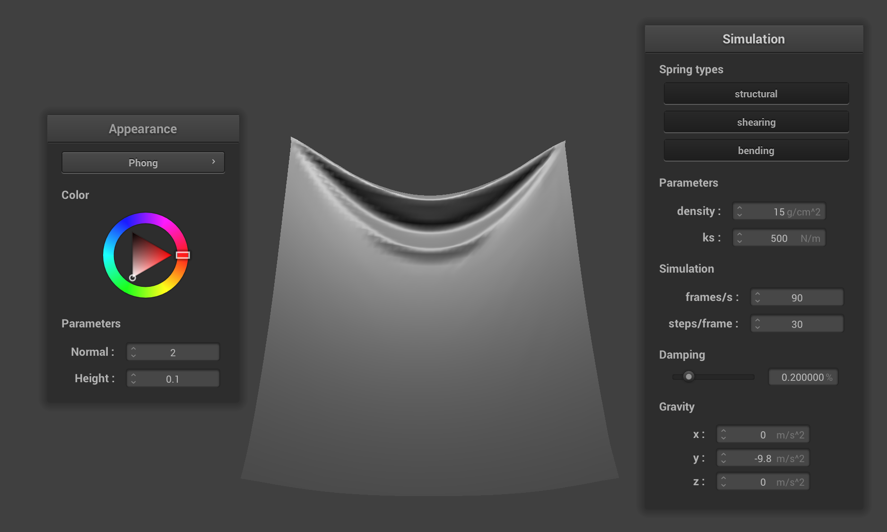
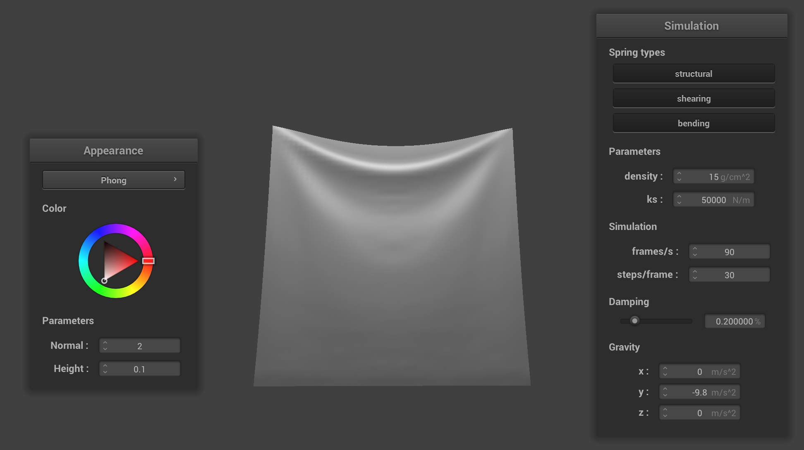
Density
I increased the GUI density from 15 to 50 g/cm² while keeping ks = 5,000 N/m and damping at 0.2%. The GUI divides the internal density parameter by 10, so these settings correspond to internal values of 150 and 500. Increasing density increases each mass and its weight. Gravity still contributes the same acceleration, but the spring acceleration for a given deformation becomes smaller because it is divided by a larger mass. This lets the cloth deform further before spring forces balance its weight.
Compared with the baseline, the density-50 capture shows a deeper upper fold and stronger diagonal folds near the pinned corners. This resembles the softer-spring case because both changes reduce spring resistance relative to the cloth's weight.

Damping
I compared the baseline's 0.2% damping with 1.0%. In the Verlet update, these settings multiply the previous displacement by 0.998 and 0.99 per substep. Increasing damping removes more of the carried-over motion, suppressing swinging and oscillation as the cloth approaches rest. Once the masses stop moving, that displacement term vanishes.
The 1.0% capture has a broad, smooth center and fewer pronounced upper folds than the baseline. A still image cannot establish how quickly the motion decayed, so this shape illustrates the higher-damping setting without providing a measured settling time.
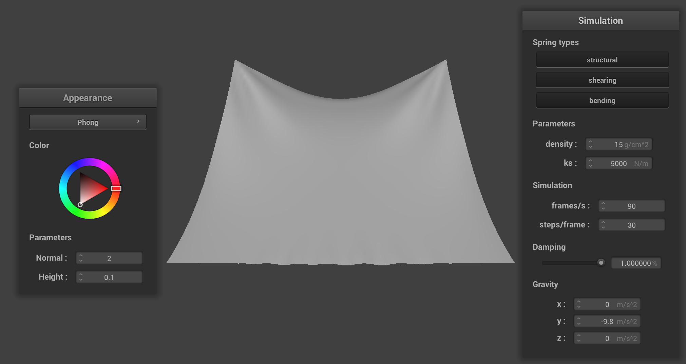
Four pinned corners
In the resting view of pinned4.json, the four fixed corners support a smooth, bowl-shaped surface. The center sags under gravity while the corners remain at their initial positions.
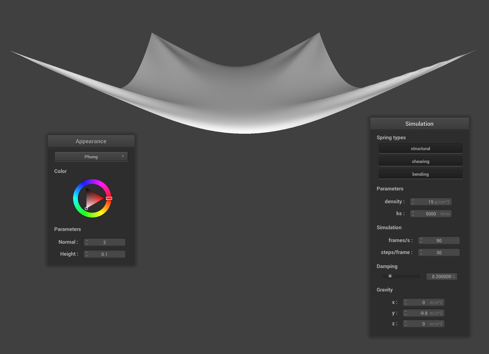
pinned4.json, ks = 5,000 N/m, GUI density 15 g/cm², damping 0.2%, shown with Phong shading.Part 3: Sphere and Plane Collisions
For a sphere, I checked whether the current point lay on or inside the collision radius. I found its surface target by normalizing the direction from the center to the point and scaling by the radius. At the exact center I used the previous position to choose the direction, with positive x as a fallback if both positions were at the center.
For a plane, I took the signed distances sprev and snow from the previous and current positions. Opposite signs indicate a crossing. I found the intersection on the motion segment at u = sprev / (sprev − snow) and moved the target by SURFACE_OFFSET = 0.0001 along the unit normal toward the starting side. If a mass starts exactly on the plane and moves into the negative half-space, the intersection is its previous position and I offset the target along the positive normal.
For either object, I took the displacement from the previous position to the target and applied a fraction of that displacement. With friction set to 0, the mass reaches the target. With friction set to 1, it stays at its previous position. Intermediate values reduce the motion toward the target.
xcorrected = xprev + (1 − friction)(xtarget − xprev)
In Cloth::simulate, I tested each free mass against the scene objects after Verlet integration and before the stretch pass.
I tested the boundary case at friction values of 0, 0.5, and 1. In headless runs of 8,100 substeps each, no masses were below the floor after plane contact or after the stretch pass in plane.json or either selfCollision.json run. One self-collision run used the scene thickness and the other used zero thickness for comparison. In a separate 8,100-substep sphere-contact test with self-collision disabled, the deepest penetration sampled after a complete substep was approximately 0.000111785 scene units.
These position corrections run once per substep. The sphere check uses the current point position, and the plane check uses the previous and current positions to identify a crossing. Later stretch corrections can move masses again, so contact remains approximate.
Cloth on the sphere
I compared the resting views of sphere.json at three stiffness settings. Each capture shows Phong shading, GUI density 15 g/cm², and damping 0.2%. The scene uses sphere friction 0.3. The capture times were not recorded, so the comparison focuses on the visible drape and folds.
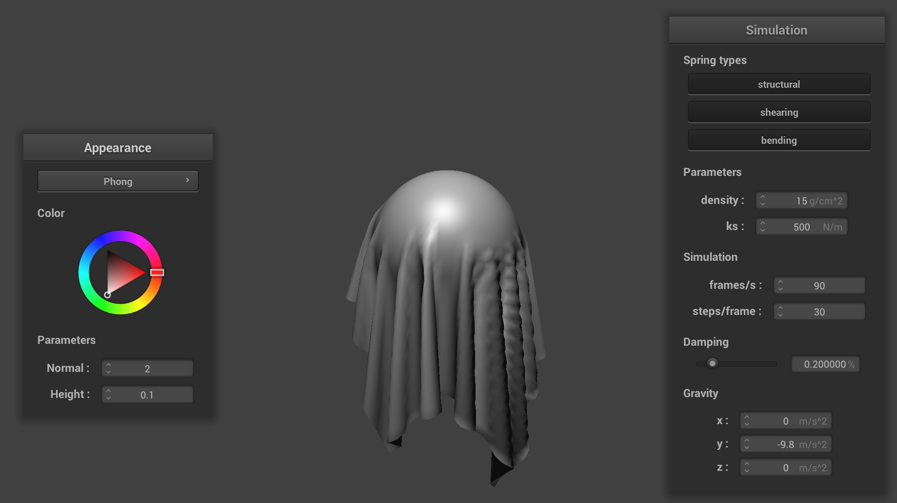
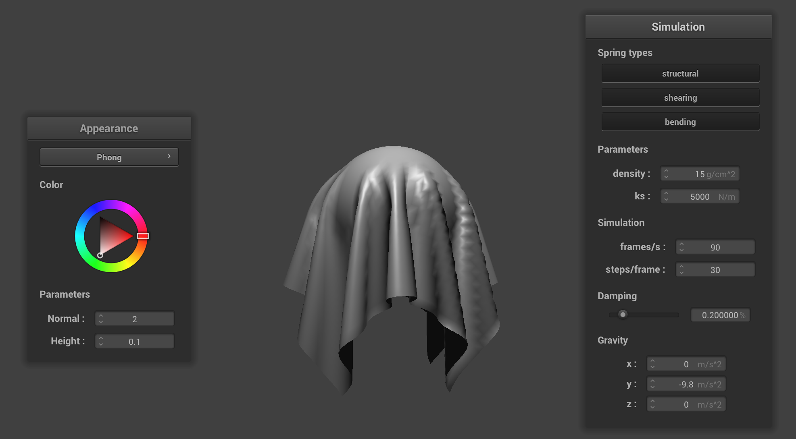
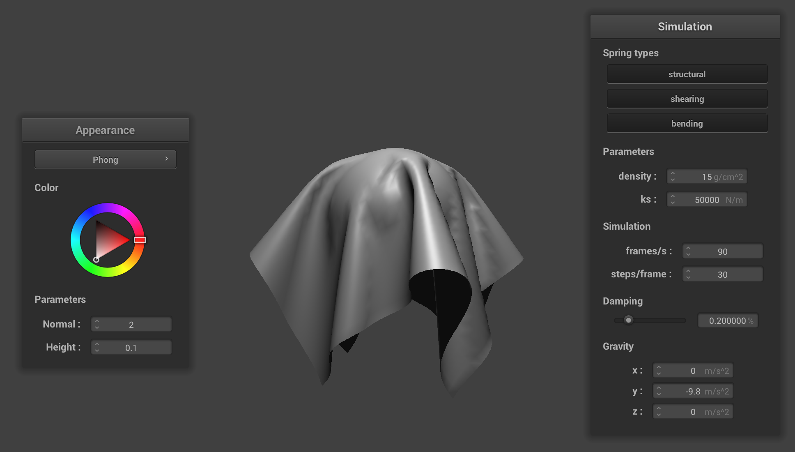
A larger spring constant produces a stronger restoring force for the same extension. It also increases bending stiffness because bending springs use 0.2ks. The softer capture wraps closely around the sphere with fine folds, while the stiffer captures have broader folds and retain more shape away from the surface. The images illustrate this change in drape, but they do not provide a measurement of spring elongation.
Cloth on the plane
In plane.json, the plane passes through the origin with normal (0, 1, 0), so its surface is at y = 0. The resting view shows the cloth as a flat square supported by that surface. The plane friction is 0.5, which applies half of the displacement from the previous position to the contact target during a crossing correction.

plane.json, ks = 5,000 N/m, GUI density 15 g/cm², damping 0.2%, shown with Phong shading.Part 4: Self-Collisions
Checking every pair of point masses would take quadratic work as the grid grows. I used the starter's hash-map container to group nearby masses into buckets, then filled in the position hash, bucket construction, and self-collision correction.
For cloth width W, height H, and grid counts N and M, the cell dimensions are w = 3W/N, h = 3H/M, and t = max(w, h). I floor each position coordinate divided by its cell dimension and wrap the resulting index into 0 through 255, including negative indices. Calling these wrapped indices bx, by, and bz, I pack them into the float key below.
key = bx + 256by + 65,536bz
After Verlet integration, I clear and rebuild the spatial map from the current positions when cloth thickness is positive. Each bucket stores pointers to its point masses. For each free mass, I retrieve candidates from its current hash bucket and skip the mass itself. Wrapping can put distant cells in the same bucket, so I still check the actual distance between candidates.
For two masses separated by distance d less than twice the cloth thickness, I add a correction of magnitude 2 × thickness − d, directed away from the other mass. Coincident masses use opposing x-axis fallback directions. I sum the corrections, divide by the number of close candidates, and divide again by the number of simulation substeps. This reduces abrupt position changes by applying a smaller correction on each substep. Object collisions and the stretch pass follow the self-collision pass.
The candidate search covers the same hash bucket. Nearby masses across a cell boundary can be missed, and later position corrections can change separations again. This keeps the method simple, but leaves self-contact approximate.
Falling and folding
The three captures below show the intended early, middle, and later progression in selfCollision.json. Each uses GUI density 15 g/cm², ks = 5,000 N/m, and damping 0.2%. Their timestamps were not recorded, so I describe the visible shapes without assigning elapsed times.
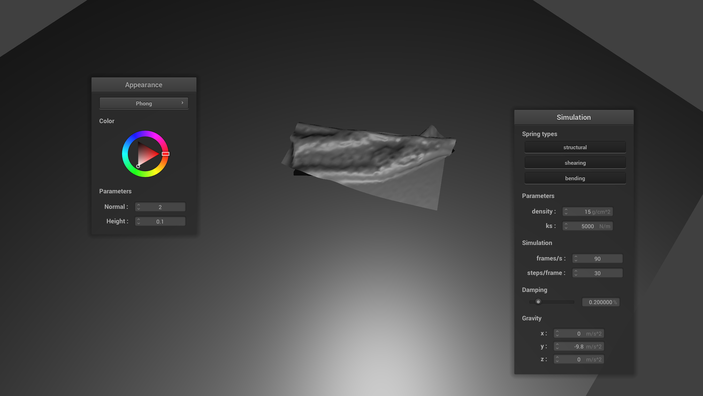
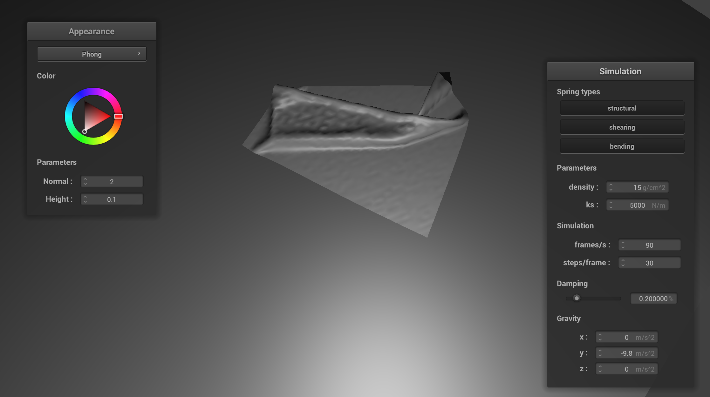
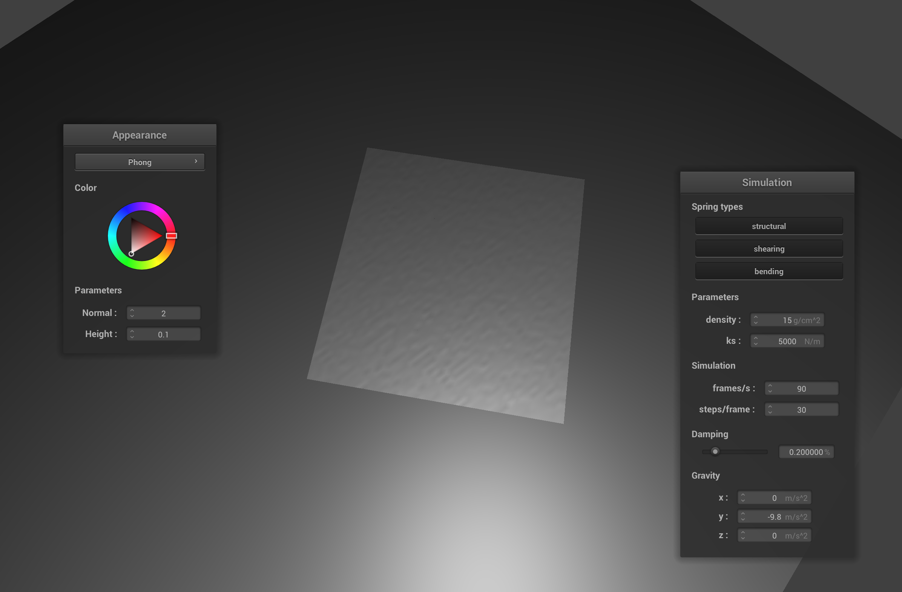
Density and stiffness
I increased the GUI density from 15 to 50 g/cm² while keeping ks = 5,000 N/m and damping at 0.2%. These densities correspond to internal values of 150 and 500. Increasing mass reduces the spring acceleration for a given deformation, while gravity contributes the same acceleration. The geometric self-collision correction itself has no density factor. Higher density therefore changes how the cloth deforms into contact through the force update.
The density-50 capture shows a folded band with overlapping edges, as the default-setting sequence also does. This view uses Wireframe, so I compare the outline and folded geometry with the default middle view. The different views and unrecorded times limit any conclusion about how much denser cloth folds or how quickly it settles.
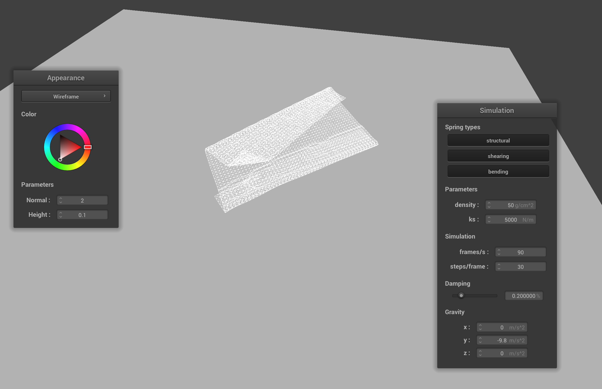
I also reduced ks from 5,000 to 500 N/m at GUI density 15 g/cm². This weakens the restoring forces for a given extension and also reduces bending stiffness, which uses 0.2ks. In the 500 N/m capture, small, irregular creases run through the middle and the left edge curls over. The 5,000 N/m view has a broader raised fold. Both show the cloth folding onto itself, with the softer setting allowing more local deformation. The captures illustrate different shapes without establishing a difference in motion speed.
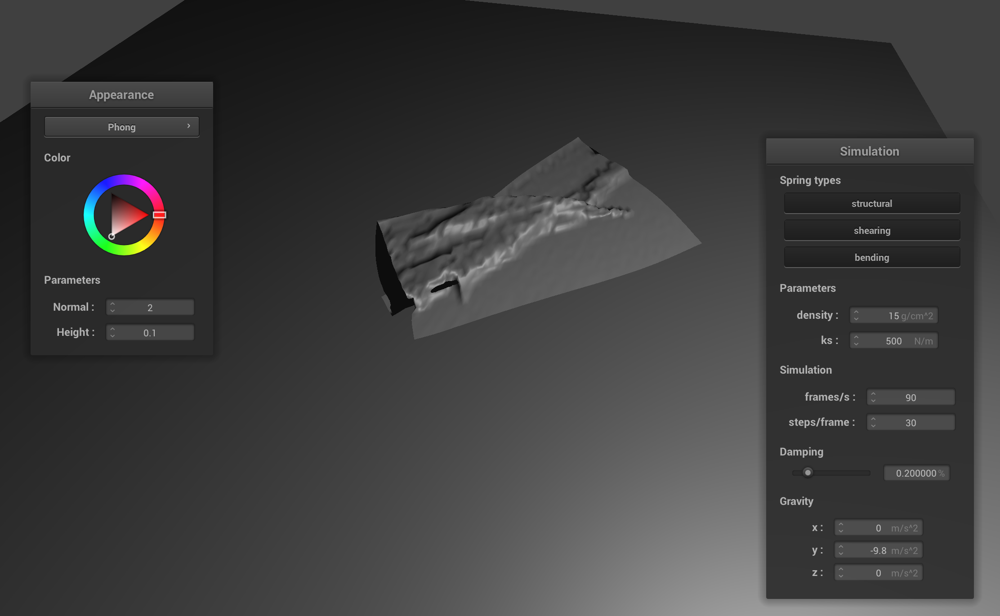
Part 5: Shaders
Shader programs determine how the simulated mesh appears on screen. The starter's vertex shader takes positions, normals, tangents, and UV coordinates, transforms positions into world and clip space, and passes surface attributes onward. Rasterization interpolates those attributes across each triangle. My fragment shaders use them to compute lighting, sample textures, or create a procedural material. I reused the starter's shader discovery, mesh inputs, and texture-loading infrastructure.
Blinn–Phong lighting
I normalize the surface normal n, the direction toward the point light l, and the direction toward the camera v. The halfway direction is h = normalize(l + v). With material color c and attenuated light intensity q = I / max(r², 10−6), the three RGB contributions are:
Cambient = 0.05c
Cdiffuse = c ⊙ q max(n · l, 0)
Cspecular = 0.5q max(n · h, 0)32
Here ⊙ multiplies RGB channels component by component. Ambient is a constant base color, diffuse describes how strongly the surface faces the light, and specular produces a concentrated highlight. The code adds specular only when both the light and viewer are in front of the surface and the halfway direction is valid. The complete Phong shader sums the three contributions with alpha 1. The isolated modes use the same terms and guards.
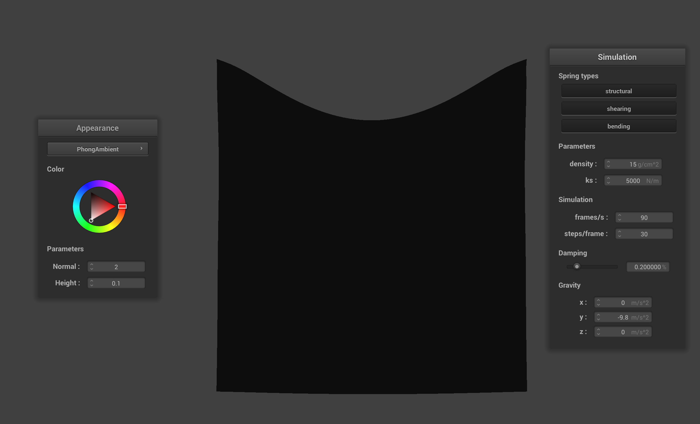
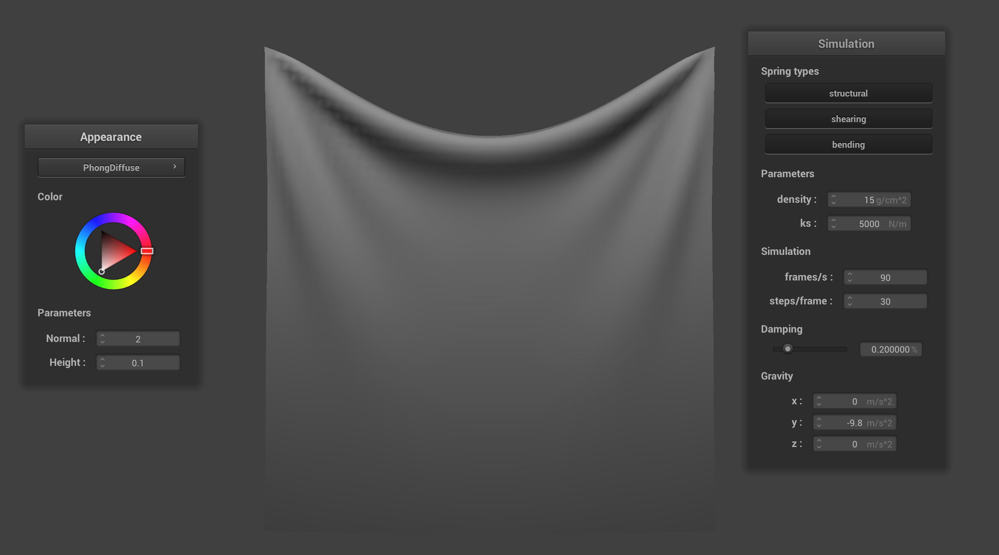
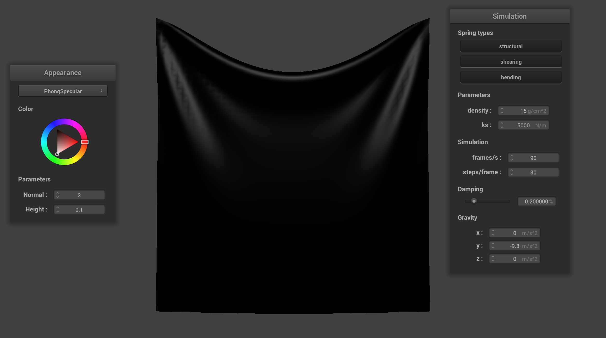
The combined example reuses the Part 4 ks = 500 capture. Its scene and camera differ from the isolated views, so these images illustrate the lighting components without forming a matched four-view comparison.
Original camouflage texture
I generated la_li_lu_le_lo_camo.png as a 1024 × 1024 image in generate_camo_texture.py. Three layers of seeded periodic noise form broad organic patches in charcoal, forest green, olive, and khaki. A small periodic brightness variation adds a fabric-like weave. The generator creates the image from these functions, using no external artwork.
The existing image loader uploads this PNG as RGB to texture unit 1 with linear filtering and repeat wrapping. The vertex shader forwards UV coordinates, and Texture.frag samples u_texture_1 at the interpolated UV. It writes the sampled color directly, giving the cloth its camouflage pattern without adding a lighting term.
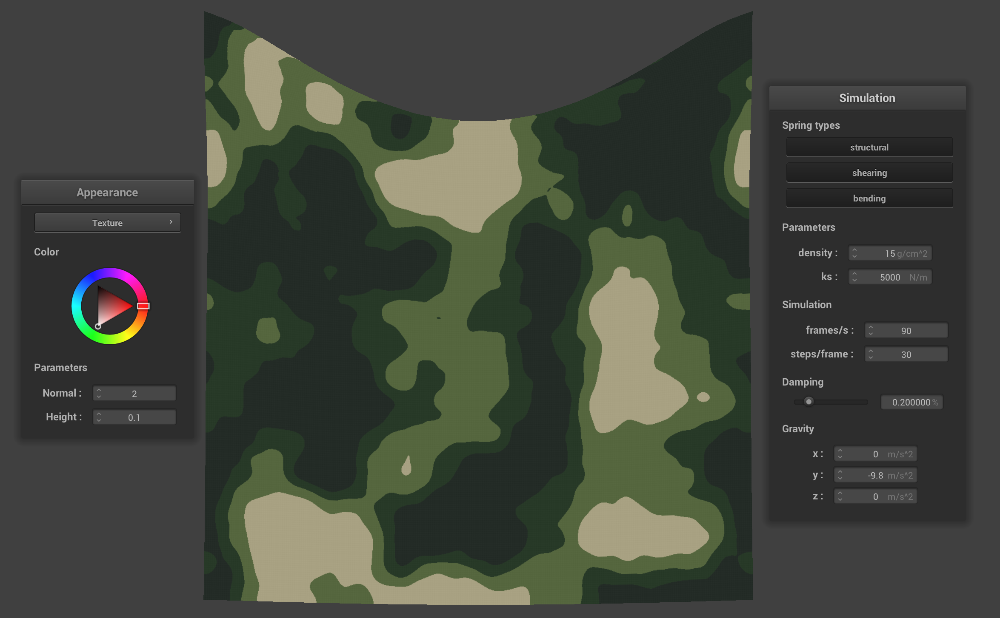
Bump and displacement mapping
Both modes use the same non-default image, la_li_lu_le_lo_weave_height.png, through texture unit 2. I generated this 1024 × 1024 RGB height map with equal channels in generate_weave_height.py. Periodic cosine functions combine broad relief, twelve threads per axis with alternating warp and weft, and fine detail. The functions repeat across both image boundaries. Sharing this image keeps the surface pattern consistent between the two mapping methods.
For bump mapping, I read the red channel as height H(u, v). With decoded texture dimensions Tw and Th, and scale s = Height × Normal, I calculate one-texel height differences:
Δu = s[H(u + 1/Tw, v) − H(u, v)]
Δv = s[H(u, v + 1/Th) − H(u, v)]
I orthogonalize the tangent against the normal, normalize it, and form the bitangent as b = n × t. The perturbed normal is normalize([t, b, n] (−Δu, −Δv, 1)). These finite texture differences change the lighting normal while the bump vertex shader preserves the mesh positions.
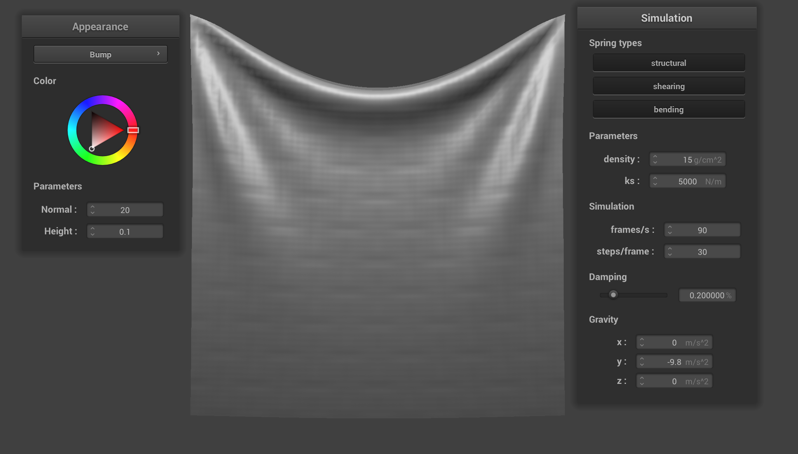
I captured the spheres from scene/sphere.json using ./build/sdk26/clothsim -r . -f scene/sphere.json -o 16 -a 16 and ./build/sdk26/clothsim -r . -f scene/sphere.json -o 128 -a 128. The resolution labels come from these recorded capture commands; the GUI does not display them. Both Bump and Displacement use Normal = 20, Height = 0.1, and the same height texture. Camera framing is similar but not identical. In the bump views, the fine height pattern changes the shading while the outline remains the underlying polygonal mesh. The 16 × 16 outline is more faceted, and the 128 × 128 boundary is smoother.
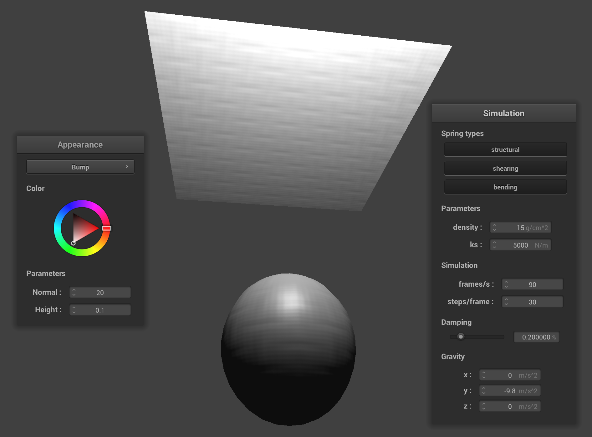
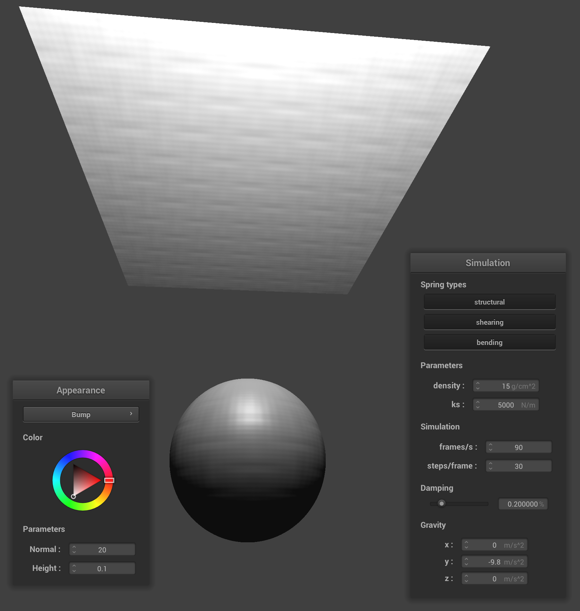
Displacement samples the same red-channel height at each vertex and offsets the model-space position along the input normal:
p′ = p + ninput H(u, v) Height
The displaced position is transformed into world and clip space. Its fragment shader uses the same normal-perturbation and lighting equations as Bump. Height therefore controls geometric displacement and also contributes to the shading scale, while Normal controls only the shading perturbation.
With Normal = 20 and Height = 0.1, displacement changes the sphere silhouette as well as its shading. The 16 × 16 view has broad, angular changes around the outline. The 128 × 128 view resolves finer ripples along the boundary because more vertices sample the height map. Both show geometric relief that bump mapping leaves out. The different framing limits a direct comparison of their apparent sizes.
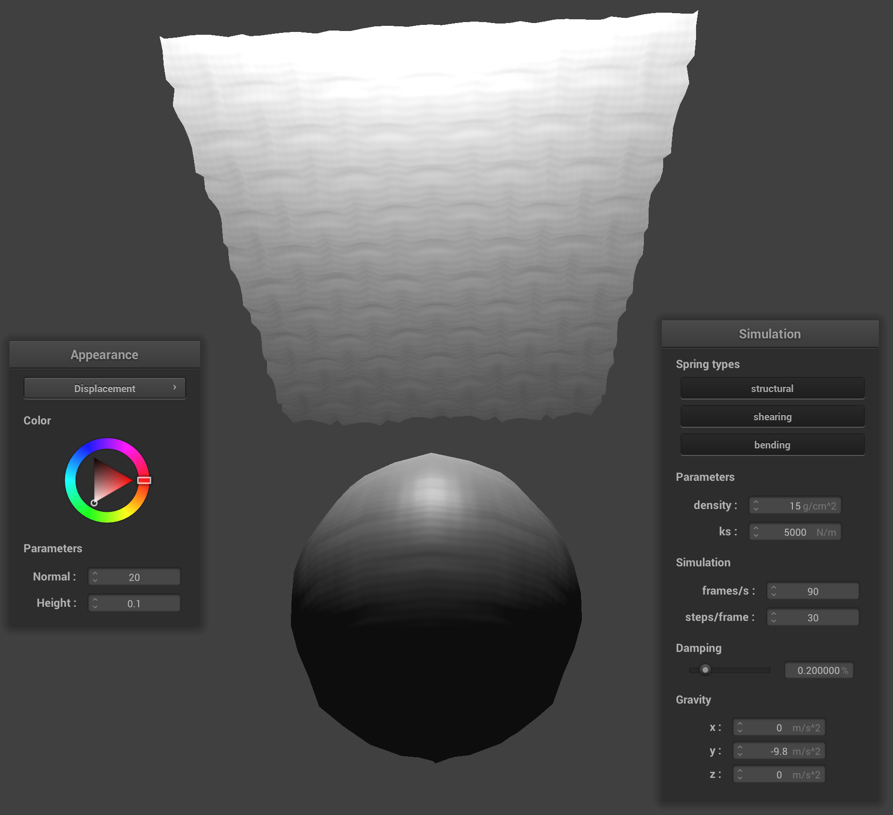
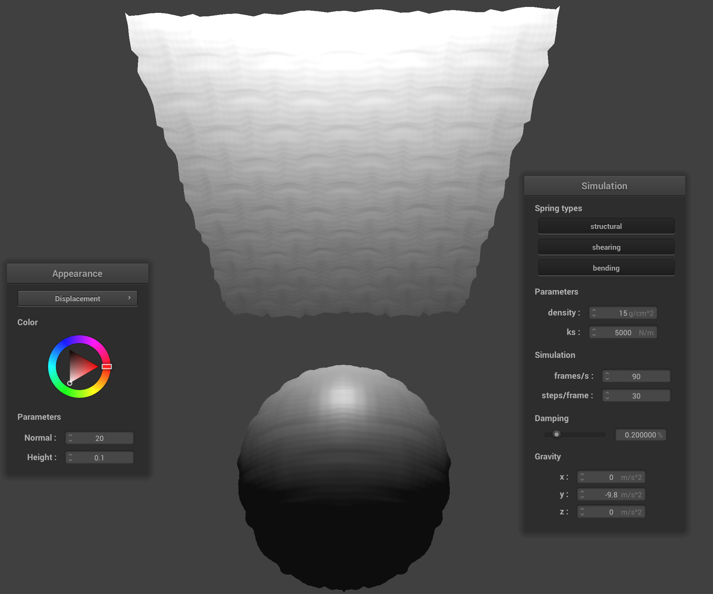
Mirror shading
I normalize the direction from the surface toward the camera as wo, then calculate reflect(-w_o, n) using the normalized surface normal. This reflected direction samples the starter environment cubemap. As the view or surface orientation changes, the sampled environment changes. This is environment mapping, so the reflected scenery comes from the fixed cubemap rather than rays traced through the simulated objects.
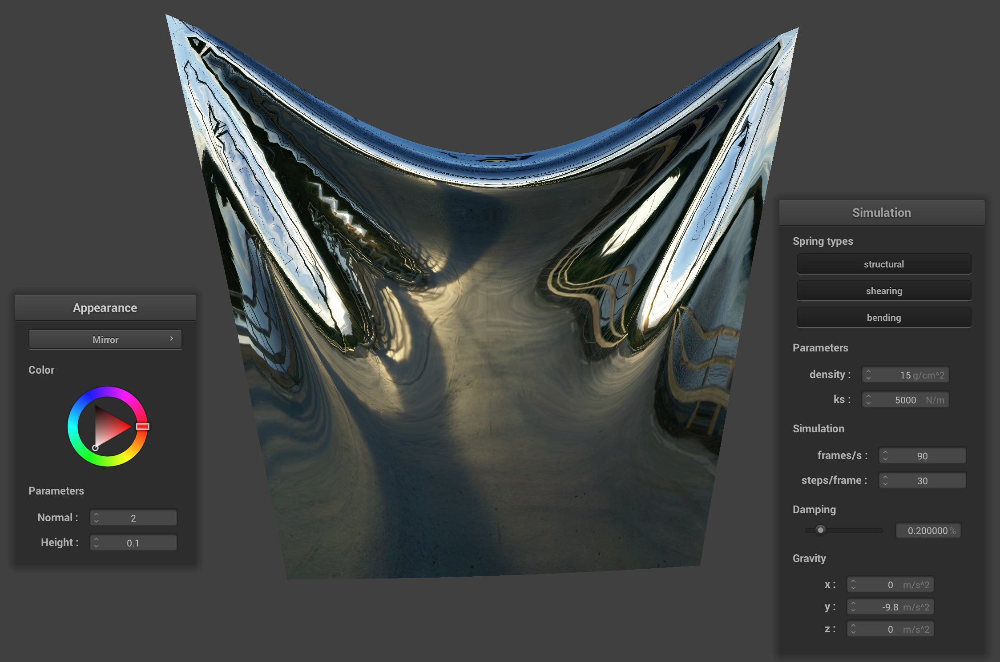
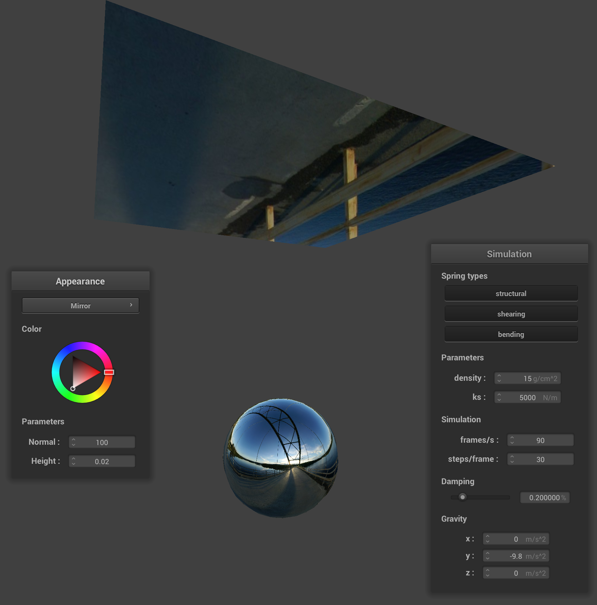
Procedural fabric shader
For the Custom mode, I wanted an olive fabric appearance with a fine repeating pattern and soft sheen. The vertex shader retains the starter transformations. In the fragment shader, a 64-cell UV checker selects between two olive colors. I use fwidth to estimate the checker footprint and fade toward the average color as the detail becomes too small on screen.
I add a grazing-angle sheen proportional to (1 − |n · v|)³, along with a constant base, inverse-square diffuse illumination, and a halfway-vector specular term with coefficient 0.18 and exponent 24. All color variation is procedural. The camouflage image belongs to the separate Texture mode. The checker remains visible across the cloth and curves around the sphere, while lighting makes the folds and rounded shape readable.
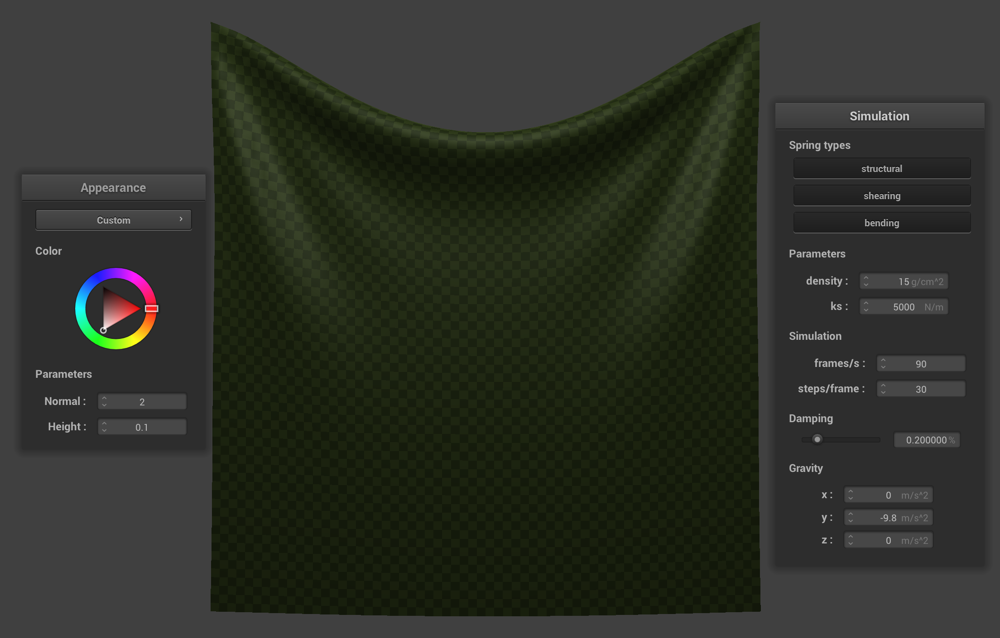
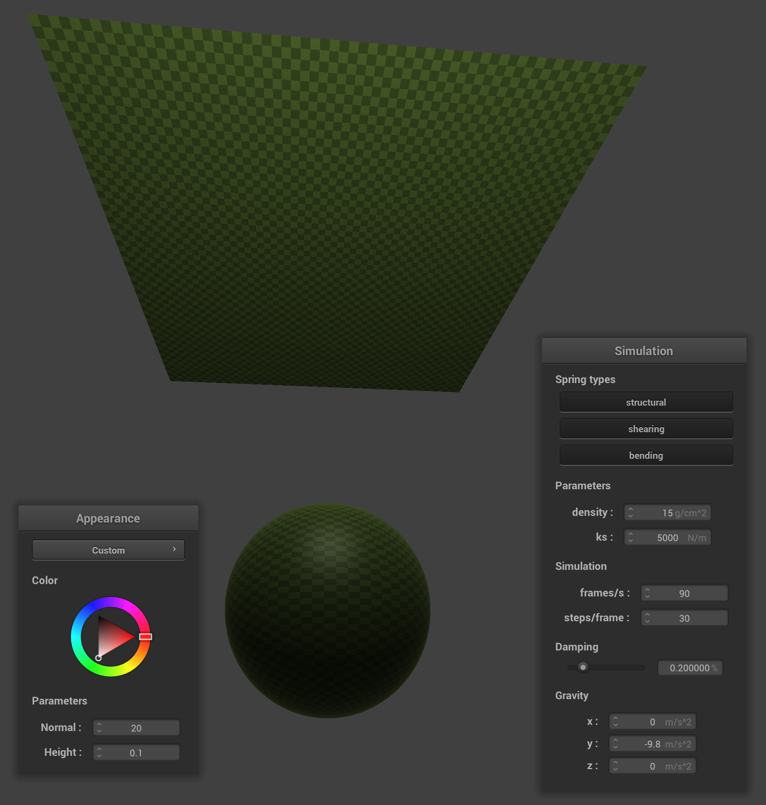
Extra Credit
I added a spatially varying wind force to deform the cloth sideways while it hangs from two pinned corners. The optional wind_strength field belongs inside the scene's cloth object and defaults to 0.0. A positive, finite value enables an additional force along +Z on each unpinned mass:
Fz,wind = m × wind_strength × [1 + 0.5 sin(2π remainder(x, 1))]
The remainder operation keeps the horizontal coordinate periodic before evaluating the sine. The force varies across the cloth as a function of position. It joins gravity and the spring forces in the damped Verlet update, so the cloth bends under the added load while the springs resist deformation. Pinned masses receive no wind force, and the position updates preserve their fixed locations. This is a simplified external-force model with a position-dependent field.
For the baseline, I used the original pinned2.json, which has wind disabled. For the wind experiment, I used a temporary scene outside the repository with wind_strength = 8.0 and the other scene parameters preserved. Both captures use the olive Custom shader described in Part 5 to make the surface shape visible.
I included the same wind configuration in scene/pinned2_wind.json, with wind_strength = 8.0 and all other parameters preserved from scene/pinned2.json. To reproduce the wind demonstration, run ./build/sdk26/clothsim -r . -f scene/pinned2_wind.json from the implementation repository root.
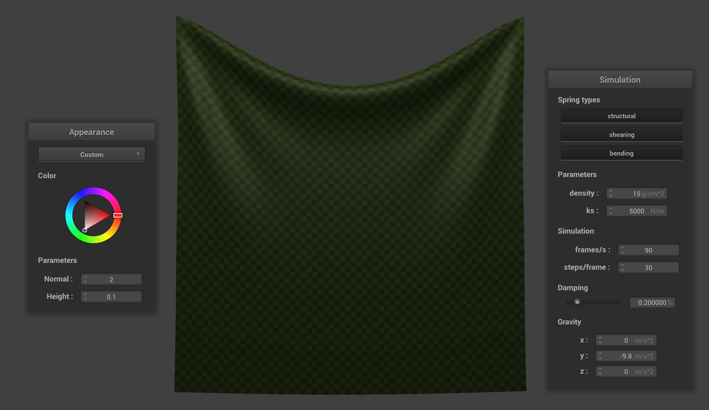
pinned2.json, wind strength 0.0. Folds gather below the pinned corners and across the upper drape.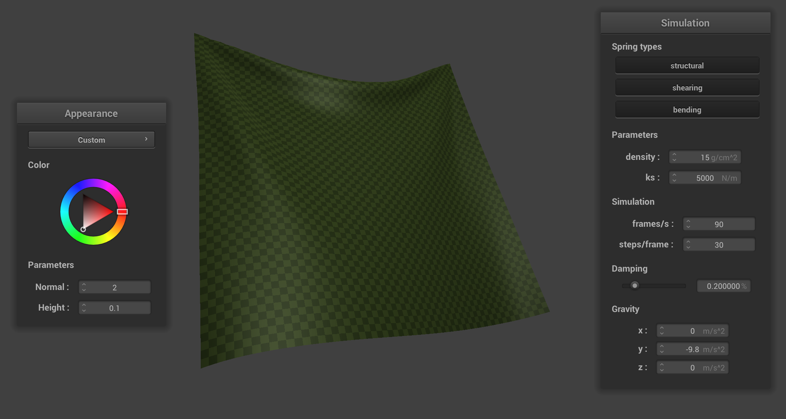
The baseline has a pronounced upper fold, while the wind-enabled view shows a broader diagonal deformation through the center. Camera framing differs and capture times were not recorded, so the figures illustrate the change in shape without measuring motion speed or displacement.
References
- UC Berkeley CS 184/284A, Fall 2026. Homework 4 assignment and Cloth Simulator starter code.
- Xavier Provot, 1995. Deformation Constraints in a Mass-Spring Model to Describe Rigid Cloth Behaviour.
Acknowledgment of LLM Assistance
I had some previous experience with computer graphics through CS 116A at San José State University, along with a background in C++ programming. However, several concepts in this homework were new to me, particularly cloth simulation, Verlet integration, spatial hashing, and self-collision handling.
I primarily used ChatGPT to help me understand these concepts as I worked through the assignment. I found it useful to ask follow-up questions, break down mathematical explanations, and connect what I was learning to the actual behavior of the simulator. I especially enjoyed being able to explore a concept in more detail whenever I needed clarification.
I spent a lot of time developing and experimenting with my cloth simulation on my Mac. I changed spring stiffness, density, and damping to observe their effects, tested different collision scenarios, and explored the shader settings. I also compared bump and displacement mapping at different mesh resolutions and captured the screenshots used in my report. Seeing these differences firsthand helped me understand the material much better.
I also used Codex to help understand and navigate the provided starter code, troubleshoot specific debugging issues, and assist with reviewing and improving the organization and clarity of my write-up.
I completed most of the implementation independently, using these tools primarily as supplementary resources for learning, debugging, and technical writing.